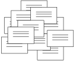
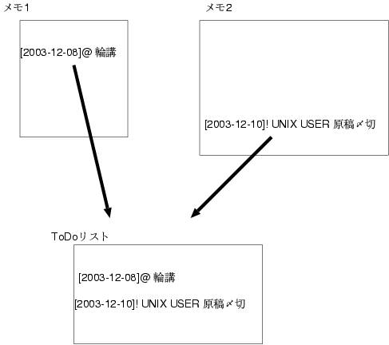
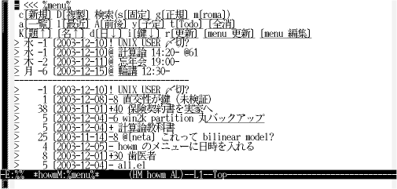
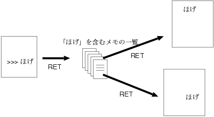
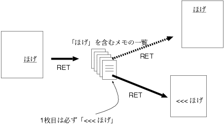
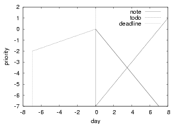

$Id: index.rd,v 1.3 2004/07/09 18:00:43 hira Exp $ khi@users.sourceforge.jp
Emacsで断片的なメモをどんどんとるための道具howmを紹介します. 「整理」のプレッシャーを感じずに気軽に書きちらかして, それでも破綻せずにやっていける環境を, howmはめざしています. このため, 分類機能はあえてつけません. かわりに, 全文検索とメモ間リンクが手軽にできるようにしました. さらに, 改宗が不要な自由書式, 重要順でも日付順でもない「旬度順」の浮沈式ToDoリスト, などの特徴もそなえています.
※ この文書は, UNIX USER 2004.2 の初稿を少し修正したものです.
自分で書いたメモは, 後ですばらしく役にたつことがあります. たとえ調べ直せばわかることでも, 自分向けの表現で書かれたメモの方が ずっと簡単に理解できます. コマンドオプションやインストールの覚え書き, 読んだ資料の要点, などなど, メモをとっていて良かったと思うことがしょっちゅうです. また, 調べ直すわけにいかない事柄もあります. 口頭で受けた用件や自分で考えたネタなど, 忘れてしまうと, 後からもう一度とはなかなかいきません.
そういうわけで, 日々メモを書きます. 無駄になるものがあっても, どうせ書きながら考えをまとめるんだし, 「しまった」と後で嘆くよりはいいでしょう.
そうやってメモを書きちらかすと, 次は整理が問題になります.
というトレードオフが悩みです.
*1 落としどころは人それぞれでしょうが, 私は書きやすさの方を重視します. 「整理」のプレッシャーを感じずに気軽に書きちらかして, それでも破綻せずにやっていける環境をめざして, メモツールを作りました.
howm(一人お手軽Wikiもどき)は, Emacsでそんなふうにメモをとるための道具です. *2
書きやすさを重視するのですから, 「このメモはどこに書くべきか」なんて 考えさせるようじゃいけません. 書きたくなるたび, 「新規メモ」「新規メモ」で, ちょこちょことメモをとるスタイルが基本になります. 断片的なメモが大量にできてしまい, そのままでは読めたものではありません.
これを使いものになる資料にしたてるには, 断片どうしの結びつけが必須です. そのためのしかけが, 「お手軽リンク」機能です.
メモ中に「>>> ほげ」と書けば, 他のメモ中の「ほげ」へのリンクになります.
メモ中に「<<< ほげ」と書けば, 他のメモ中の「ほげ」は すべてここへのリンクになります. *3
お察しのように, howmの「リンク」は全文検索を使って実装されています. どのメモとどのメモを結びつけるか個別に指定するのでは, 書く方がやってられませんから, 「○○を含むメモ」という格好でまとめて串刺しにします. *4 串刺し結果を閲覧するために, 二つの表示を用意しました.
串刺しされたメモを束にして, ぱらぱらめくって眺めます
串刺しされたメモをつなげて, 一本の長いメモとして眺めます
「リンク」と並ぶもう一つの特徴が, 浮沈式のToDoリストです. だいたい, ToDoリストなんて, 意思が弱いとすぐあふれてしまいます.
件数ふえる→「重要」しか見ない→ちょっとしたのも「重要」で登録 →インフレ→破綻
というのがありがちなシナリオ. そこで, 思い切って「重要度」は廃止してしまいました. かわりに実装したのが「旬度順」の一覧表示です.
また, 予定表も組み込んでいます. カレンダーへの転記なんてめんどうだし, 「ポケット１つ原則」にも反するからです. *5 howmでは, メモ中に
[2003-12-08]@ 輪講 [2003-12-10]! UNIX USER 原稿
のように書けば, それを抽出して予定表やToDoリストを生成します. もちろん, 生成した予定表からは該当メモに飛べます. カレンダーへのexportも可能です.
一方, いくら機能があっても, 使わないと意味がありません. 私は怠け者なので, ToDoリスト機能を作っても, 「見ようとしないと見えないんじゃ見ない」という結果になってしまいました. そこで, ことあるごとに目に入るよう, メニュー画面に予定表とToDoリストを表示しています.
以下の手順でインストールしてください. *6
$ wget http://howm.sourceforge.jp/a/howm-1.1.2.1.tar.gz $ tar xvfz howm-1.1.2.1.tar.gz $ cd howm-1.1.2.1 $ ./configure $ make $ sudo make install $ emacs ~/.emacs
case 1: emacs 起動時に読み込む
(setq howm-menu-lang 'ja) (require 'howm-mode)
case 2: はじめて C-c , , した時に読み込む
(setq howm-menu-lang 'ja) (global-set-key "\C-c,," 'howm-menu) (autoload 'howm-menu "howm-mode" "Hitori Otegaru Wiki Modoki" t)
いずれも, もし「Cannot open load file」とかエラーが出るなら, 上記の前にこれを追加
(add-to-list 'load-path "/usr/share/emacs/site-lisp/howm/")
インストールできたら, さっそくemacsを起動しなおして, 使ってみましょう. 何はともあれ, 「C-c , ,」というキー操作を覚えてください. *8 次のようなメニューが表示されます.
= <<< %menu% c[新規] D[複製] 検索(s[固定] g[正規] m[roma]) a[一覧] l[最近] A[前後] y[予定] t[Todo] [全消] K[題↑] [名↑] d[日↓] i[鍵↓] r[更新] [menu 更新] [menu 編集]
ここで, 左上の「新規」のところに書いてあるキーcを押すと, 新規メモが作られます.
= ← タイトル欄 [2003-11-26 21:51] ← 作成日時
次のように編集し保存してください.
= 最初のメモ ← タイトル欄 [2003-11-26 21:51] ← 作成日時が自動記入される 使ってみた
練習として, 同じことをもう一回, 「C-c , ,」からやってみましょう. 「>>>」の後には, メニューを呼ぶ前に開いていたファイル名が記入されます.
= 二番目のメモ [2003-11-26 22:03] >>> ~/howm/2003/11/2003-11-26-215156.howm もう一回練習してみた
基本的には, こんなふうにして 好きなことを書きちらかしていくだけです. タイトル欄は, めんどうなら空でも構いません. メモツールとしては当然のことですが, ファイル名をいちいち考えなくていいのがポイントです.
書いたメモを読むために, また「C-c , ,」でメニューを出して, 今度は「一覧」のところに書いてあるキー aを押してください. 図のような調子で, 上に更新順の全メモ一覧, 下にその内容が表示されます. カーソルを動かせば, それにつれて内容表示も切り替わります. *9 長いメモは, SPC・BSやj・kでスクロールできます. 表示されているメモを開くにはRETを押します. *10
次は検索をしてみましょう. メニューを出して, 検索の「固定」というところに書いてあるキー sを押してください. ミニバッファが「Keyword: 」と入力待ちになるので, 「みた」と入力すれば, 文字列「みた」を全メモから検索します. 結果はさきほどと同じように一覧＋内容で表示されます.
一覧表示中に@を押すと, 図のような 連結表示に切り替わります. もう一度@を押すと元の一覧表示に戻ります. 連結表示では, 一覧で列挙されたメモを連結して一つのバッファで眺められます. 断片的にとったメモでも, こうやってつなげて読めるようになっています. メモを探すとき, 検索でおおまかに絞ったら, あとは連結表示に切り替えて 眺めるなりC-sで探すなりするのがおすすめです.
基本的には, こんなふうに一覧や検索を使ってメモを閲覧するだけです.
断片的にとったメモを使いものになるよう結びつける肝が, 「お手軽リンク」です.
メモを開いて「>>> みた」と書くと, 色が変わって下線がつきます. 下線は, 「ここでRETを押すと何かが起こるよ」という印です. 今書いた文字の上にカーソルを置いてRETを押してください. すると, 文字列「みた」が検索されて一覧表示になります. *11 あとは前節のように眺めたり開いたりできます. *12
以上のgotoリンクと逆の働きをするのが, come-fromリンクです. 新しいメモに「<<< 練習」と書いて保存してみてください. 「練習」に下線がつきました. これは, 「練習」というキーワードが登録されたことを表しています. *13 今後は, 全メモの「練習」という文字列にことごとく下線が引かれます. ためしに, 前に書いた「二番目のメモ」を開いてみてください. *14 「練習」の上でRETを押すと, また一覧表示になります. 表示されているのは文字列「練習」の検索結果なのですが, 「<<< 練習」は必ず先頭にくるというしかけになっています. ということは, 「練習」からRETを2回続けて押せば 「<<< 練習」が開かれるわけです. こうして, 「練習」という文字列から「<<< 練習」へ飛ぶことができます.
メモ中に次のように書けば, 予定などの意味になります. *15
[2003-11-27]@ 予定です [2003-11-27]- 覚書です [2003-11-27]+ ToDoです [2003-11-27]! 〆切です
これを保存してから「C-c , ,」でメニューを出すと, メニューの下に予定表とToDoリストが表示されます.
> 木 0 [2003-11-27]! 〆切です > 木 0 [2003-11-27]@ 予定です ------------------------------------- > 0 [2003-11-27]! 〆切です > 0 [2003-11-27]- 覚書です > 0 [2003-11-27]+ ToDoです
下線がついている「>」にカーソルを置いてRETを押せば, gotoリンクと同じように該当メモへ飛べます.
予定表には, 予定と〆切が日付順に表示されます. 一方, ToDoリストには, 覚書・ToDo・〆切が「旬度順」で表示されます(図): 覚書は, 指定日からだんだん沈んでいきます. やりたいなあという程度のことは, 覚書にしておくとよいでしょう. 一方, ToDoは指定日からだんだん浮かびあがってきます. こちらは絶対やらなきゃいけないことという位置づけです. 〆切は指定日が近づくと浮かびあがってきます. 浮き沈みの速さは, 次のように数字をつけて調節できます. 数字が大きいほど動きが遅くなります.
[2003-11-27]-17 覚書です ← 17日で通常の1日分沈む [2003-11-27]+2 ToDoです ← 2日で上まで浮かぶ [2003-11-27]!31 〆切です ← 31日前から浮かびだす
数字をつけなかったときのデフォルトは, 「-1」「+7」「!7」です. 「緊急ではないが大事なこと」には, 「-999」などを 指定しておくといいでしょう.
なお, メニューには, 予定表が一週間分, ToDoが上位50個しか表示されません. 全部見るには, メニューの「予定」・「Todo」のところに書いてあるキー y・tを押して一覧表示にしてください.
さて, 〆切を無事クリアして用事を済ませたとしましょう. メニューを出して「>」でRETを押して, 「〆切です」のメモを開いてください. [2003-11-27]!の!にカーソルを置いてRETを押すと, ミニバッファに
RET (done), x (canceled), symbol (type), num (laziness):
と表示されて入力待ちになります. さらにRETを押せば, 本文が次のように書きかわります.
[2003-11-27]. [2003-11-27]:! 〆切です
「.」は「済み」の印です.
中心機能の説明が済みました. もう今からhowmで遊べます. とはいえ, 機能だけではイメージがわきづらいですから, 活用例を紹介しましょう.
決心して注文しました. もちろん「2003年度PC」と書いたメモをとりながらです. 納期二週間とのことなので, 二週間後の日付で
[2003-12-11]+ 2003年度PC 納品待ち
というToDoを書いておきます. *17
請求書が届いたので, 経費の事務処理をします. メモには,
{keihi03} 111111円 blue [2003-12-15]
のように書いておきます. もちろんこの「blue」からもblueメモ一覧に飛べて, 型番や経緯を調べられます.
経費の残額が気になりました. 実は年度はじめに「<<< {keihi03}」というメモを作ってあるので, 「{keihi03}」には下線がつき, そこでRETを押すと
{keihi03} 111111円 blue [2003-12-15]
{keihi03} 222222円 red [2003-07-07]
{keihi03} 333333円 yellow [2003-06-26]
のように経費の一覧が出ます. 補助ツール yen.elを使って合計額を出し, 予定どおりのペースなことを確認しました. *20
こんなふうに, RETキーひとつで
のような複数の観点から閲覧できるのが, howmのうれしい所です.
かけ足ぎみでしたが, howmの幹を紹介しました. 枝葉については, 同梱のTUTORIALやREADMEを参照ください.
一時期, howmの開発は停滞していました. 本人がそこそこ使える段階で満足して, それ以上詰めずに放置していたのでした. これをまた改良して「作る楽しみ」を味わえているのは, ユーザーがくださった指摘やアイデアのおかげです. ありがとうございます.
また, howmを構想する過程で, 他のツールをいろいろ参考にしました. 特に, Q-pocket・ HashedWiki・ ChangeLogメモ からは大きな影響を受けています. 興味深い作品を公開してくださった先達に感謝いたします. howmが次の誰かを刺激して, またおもしろい物が生まれれば, 作者にとって何よりの喜びです.
howmは自由書式なので, 改宗は不要です. べたテキストファイルにお好きな書式でメモがとれます (リンク書式>>>なども変更可能です). さらに, howm自身はマイナーモードとして実装されているので, お好きなモードと組みあわせることができます. 例えば私は, RDという書式でメモを書くために, rd-mode上でhowmを使っています. *21
また, 将来やめても泣かせません. べたテキストファイルですから, 読めなくなることはありませんし, スクリプトでの書式変換などもしやすいでしょう. 最低限ですがHTMLへの変換を用意していますので, リンクまで含めて資産を残すこともできます.
分類する方が破綻しがちなように思います. 「研究室の計算機」は, 「研究室」と「計算機」のどちらに 分類したらいいんでしょう? howmだと, メモのどこかに「研究室の計算機」 と書いておくだけで両方の一覧に表示できます.
迷うくらいなら, ChangeLogメモ上でhowmを使うこともできます. 同梱のCL-HOWM.rdを参照ください.
今の版ではどちらも不要です. (メモが増えて検索速度が問題になったら, grepを使って高速化することもできます.)
私のメモは10万行を越えていますが, 今のノートPCなら検索も開くのも1秒以下, *22 *23 前のノートPCだと1〜2秒でした(どちらもgrep使用). *24 ネットごしにWikiを使うのと比べれば許容範囲かと.
私が使っているのはGNU Emacs 21.2.1ですが, XEmacs, Carbon Emacs, EmacsCE, Meadow等でも 動くことを期待しています. *25 不具合があればお知らせください. また, xyzzy用のラッパー 「howm-wrap」がkimura氏により 開発されています.
２ちゃんねる のUNIX板howmスレッドへどうぞ.
gotoリンク, come-fromリンクに加えて, Wiki風の書式と機能を持つリンクも用意しました. [[ほげ]]と書くとそこに下線がつきます. これは基本的にはgotoリンクなのですが, 飛ぼうとしたときに飛び先 「<<< ほげ」 が存在しなかったら, 新規メモとしてそれを作成します. 先にリンクだけ作っておいて「ほげ」の中身は後から書く, というときにはWiki風リンクが便利です.
さらにWiki気分を出すには, メニューをFrontPage扱いするとよいでしょう. 「C-c , ,」でメニューを出し, 最下行の[menu 編集]にカーソルを置いて RETを押せば編集できます. よく使うメモへのgotoリンクなどを書いておくと便利です.
以下はhowmに同梱されています.
以下は<URL:http://howm.sourceforge.jp/cgi-bin/hiki/hiki.cgi?ExternalTool> からダウンロードしてください.
*1「おっくう」は大切なキーワードです. 「できる」と「気軽にできる」は大違い. やろうとしないとやれないんじゃやらない.
*2コラボレーションツールWiki＝Webで誰でも編集＋お手軽リンク＋お手軽フォーマット. UNIX USER 誌2004年1月号の特集でも紹介されています. howmは, 「お手軽リンク」の発想をWikiから拝借しました.
*3goto 文と対になる「come-from 文」がJargon 辞書に載っています. 機能はご想像どおり…
*4速度が気になりますが, やってみると今どきの計算機の速さを思い知らされます.
*5野口悠紀雄氏の『「超」整理法とはなにか』を参照.
*6本記事の記述は, howm-1.1.2.1のものです. <URL:http://howm.sourceforge.jp/index-j.html>で最新版を確認し, 適宜読みかえてください.
*7環境によっては~/.emacs.el
*8ご存知のとおり, 「[control]を押しながら[c]を押し, ([control]を離して)[,]を2回押す」という意味です.
*9書き覚えがない0000-00-00-000000.howmには, メニューが入っています. 今は気にしないでください.
*10一覧から, 絞り込みやソートもできます. READMEを参照ください.
*11「そうじゃなくて本当に改行がしたい」というときは, Emacsの定石どおりC-q RETです.
*12実は, 「>>> /etc/services」のようにファイル名を指定することもできます. ファイルの拡張子に応じて, 必要なら外部viewerが起動されます.
*13登録先は ~/.howm-keys というファイルです. 中身は単にキーワードの羅列ですから, いざというときはエディタで直接編集して構いません.
*14もし「練習」に下線がついていなかったら, 「C-c , ,」でメニューを出してr(更新)を押してください.
*15メニューを出してd(日↓)を押すと, 日付をさっと入力できます.
*16登録済みのcome-fromキーワードは, メニューの[鍵↓]で補完入力ができます.
*17メニューを出しd(日↓)を押して+14と入力すれば, 二週間後の日付が[2003-12-11]のように記入されます.
*18同じ「<<< 2003年度PC」が二箇所あることになりますが, 別に構いません. 「2003年度PC」一覧で一位と二位に表示されるだけの話です.
*19ここで, 二つの問題が生じています. ひとつは, 一般的な単語のせいで, 「blue」のメモ一覧にこのマシンと関係ないメモも混ざってしまうことです. もう一つは, 「blue」と「2003年度PC」が同じものの別名なのに, いちいちたぐらないと他方のメモをみつけられないことです. 今のhowmの限界ということで, 当面はかんべんしてください. このあたりは本物のWikiと共通する課題で, Wikiでも対策が模索されています. ［追記］テスト版 howm-test040508 から, alias 機能の試験実装が入っています.
*20yen.elは領域内の「○○円」を合計します.
*21RDは, 素のままでも読み書きしやすいし, HTML等への自動変換もできる, という特長を持つドキュメントフォーマットです. Tosh氏のJust Another RD Siteを参照. Emacs上でRDを書くためのメジャーモードrd-modeは, 配布されているrdtoolsに含まれています.
*22検索はヒットが200箇所程度までのとき. ヒットが1000箇所だと4秒弱.
*23Pentium M 1.4GHz(を600MHzで常用), RAM 1Gbyte, メモファイル1200個 (14万行8Mbyte, come-fromキーワード2000個)
*24Pentium III 700MHz, RAM 384Mbyte, メモファイル1000個
*25XEmacs対応パッチをくださった「や」氏に感謝いたします.